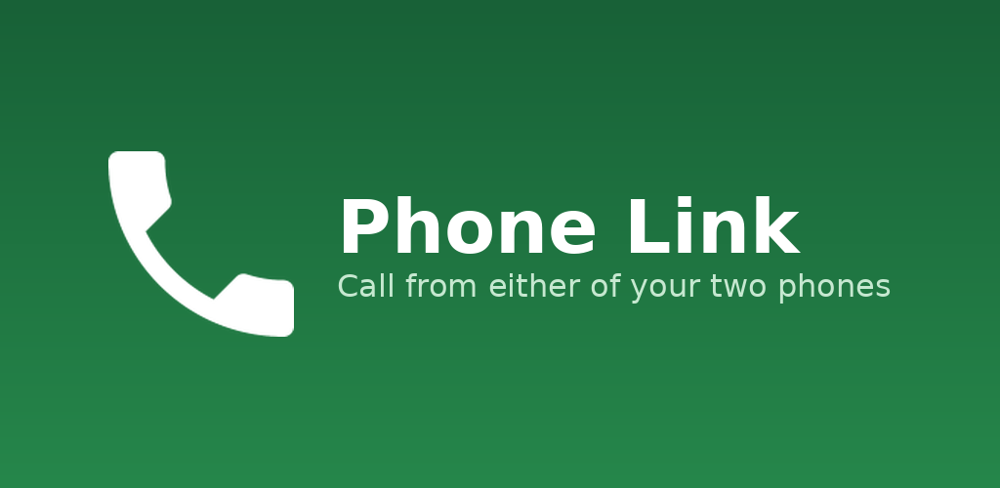

Phone Link passes call audio to a Bluetooth headset registered to your account. Here's what works, and how we get you set up.

Three steps, and we handle the middle one.
Tell us the Google account you use in Phone Link. Already own a Bluetooth headset? Send the model and we'll check whether it works.
We add the headset to your account. If you need one, we'll help you pick a compatible model and arrange delivery.
The app picks up the change on its next sync. Connect the headset and relayed call audio plays through it.
Audio only ever goes to a registered headset — never to another device that happens to be connected, and never to the phone speaker.
Whether you already have a headset or need one, we'll get you sorted.
Or email asfandyaralishah@rocketmail.com